NuevoModelo 2026
Smartwatch VP29 con chip SIM y cámara giratoria
Pantalla AMOLED de 2,29″ y Android 10 en la muñeca. La cámara sale del costado y gira 180° para videollamadas, fotos y video.
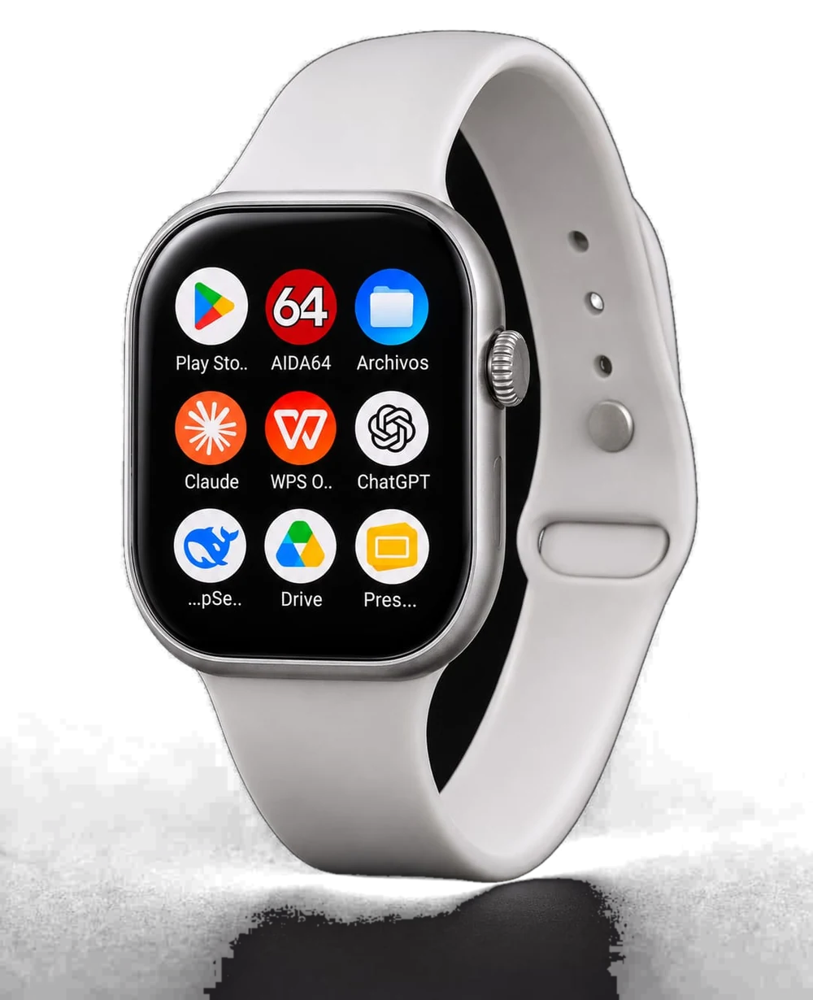
- 2,29″Pantalla AMOLED
- 180°Cámara giratoria
- 1380mAhBatería, hasta 2 días
- IP67Resistencia al agua
Recorrido 3D
El VP29 2026 en 3D, por dentro y por fuera
-
01 · Cámara
180°
Sale del costado y gira 180°
La cámara telescópica vive junto a la corona: apunta a ti o al frente para videollamadas, fotos y grabación.
-
02 · Chip SIM
SIM
El chip entra por el borde inferior
Lo colocas en la bandeja y la cierras al ras de la caja. Con tu chip, contestas y marcas llamadas desde el reloj.
-
03 · Apps
2,29″
WhatsApp y ChatGPT en la pantalla
Android 10 con tienda de apps: entras a tus chats o le escribes una pregunta a ChatGPT.
-
04 · Sensores
6sensores
Frecuencia cardíaca en la parte de atrás
El módulo trasero se enciende en verde para medir tu pulso; dentro van acelerómetro, giroscopio, barómetro y brújula.
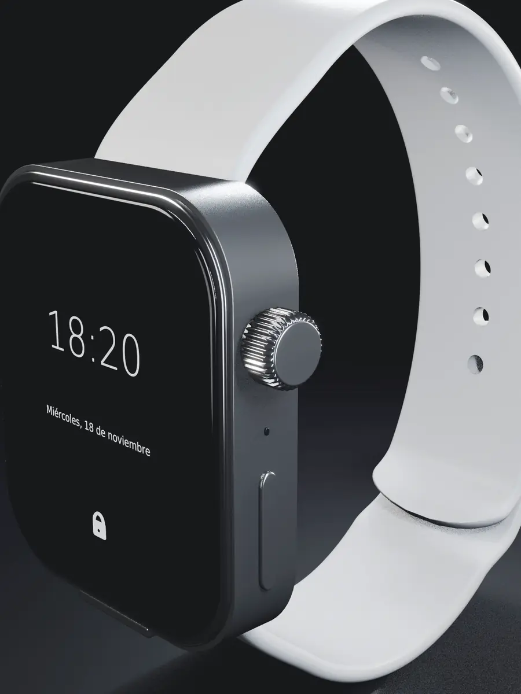
Pantalla y apps
AMOLED de 2,29″ con Android 10
490 × 580 píxeles, táctil con dos dedos como un celular y una tienda para instalar tus apps.
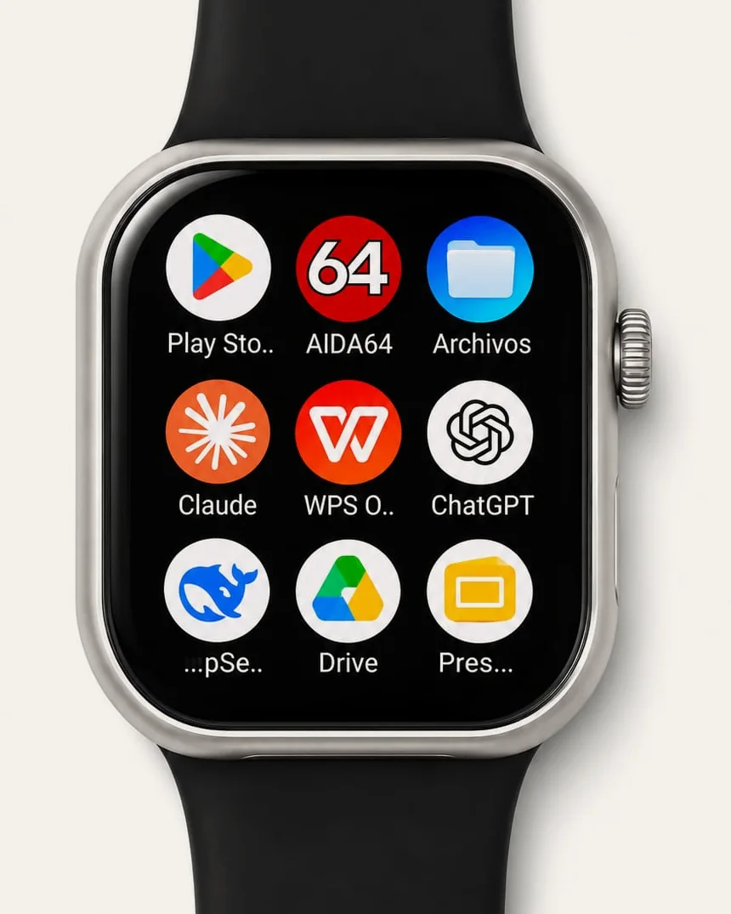
490 × 580Resolución
4 GBMemoria RAM
W377EProcesador
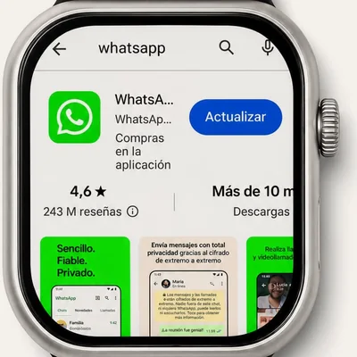
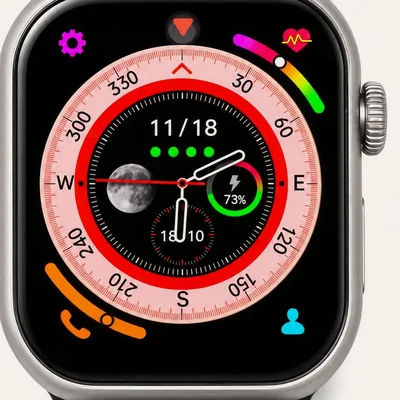
Apps que se ven en el VP29
 WhatsApp
WhatsApp ChatGPT
ChatGPT Claude
Claude- DeepSeek
- Drive
 Play Store
Play Store
Cámara
Una cámara que sale del costado
Telescópica y giratoria: sale junto a la corona y gira 180° para grabarte a ti o a lo que tienes enfrente.
- Videollamadas, fotos y grabación de video
- Se guarda en la caja cuando no la usas
- Galería y reproductor de video en el reloj
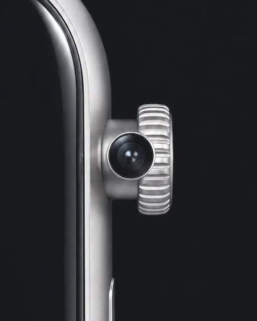
Lente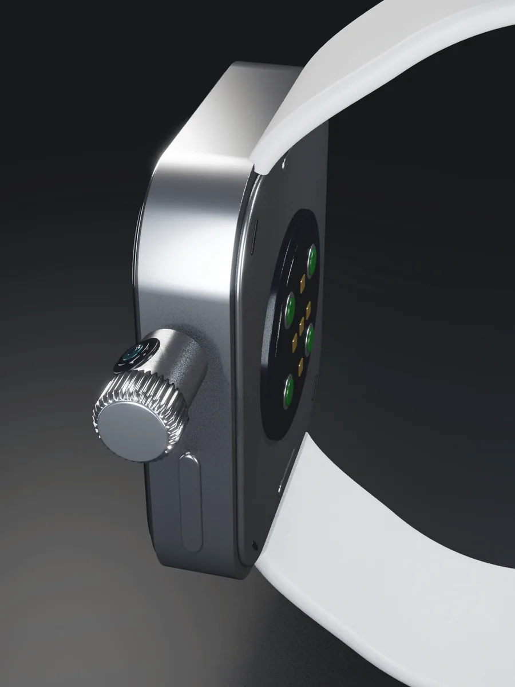
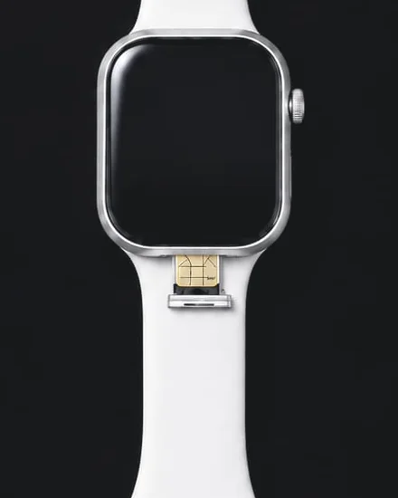
Aquí va el chipChip SIM y llamadas
El chip va en el borde inferior
La bandeja sale por debajo de la caja, junto a la correa. Con tu chip, el VP29 contesta y marca llamadas y te avisa de mensajes.
- 1Saca la bandeja del borde inferior.
- 2Coloca el chip con los contactos hacia arriba.
- 3Empuja la bandeja hasta que quede al ras.
- Wi-Fi
- NFC
- Bluetooth 4.1
- Llamadas y SMS
Sensores y actividad
Pulso, pasos y sueño desde la parte de atrás
El módulo trasero mide la frecuencia cardíaca y el reloj registra pasos, ejercicio y sueño.
- Frecuencia cardíaca
- Acelerómetro
- Giroscopio
- Podómetro
- Barómetro
- Brújula
1380 mAhBatería, hasta 2 días
IP67Resistencia al agua
Las mediciones de salud son referenciales: el VP29 no es un dispositivo médico.
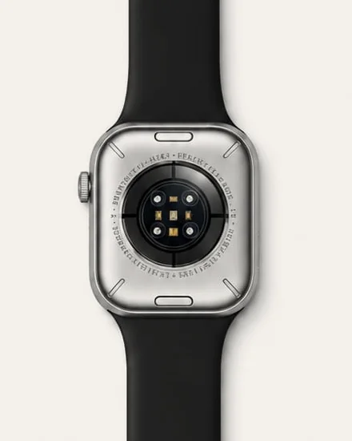
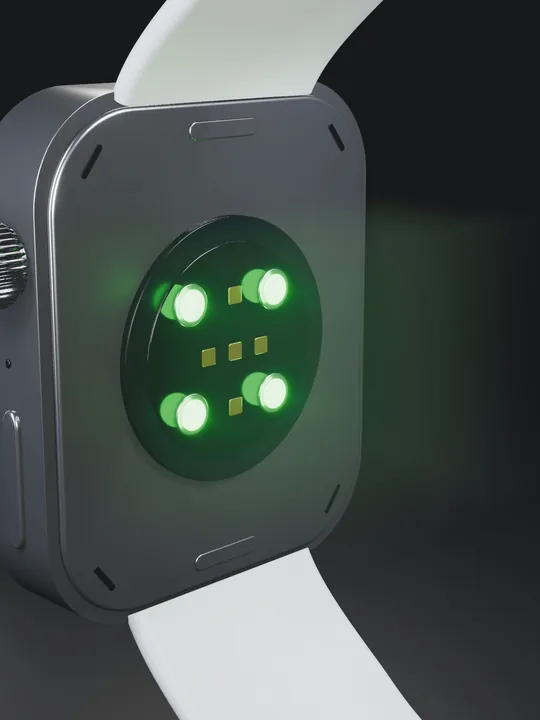
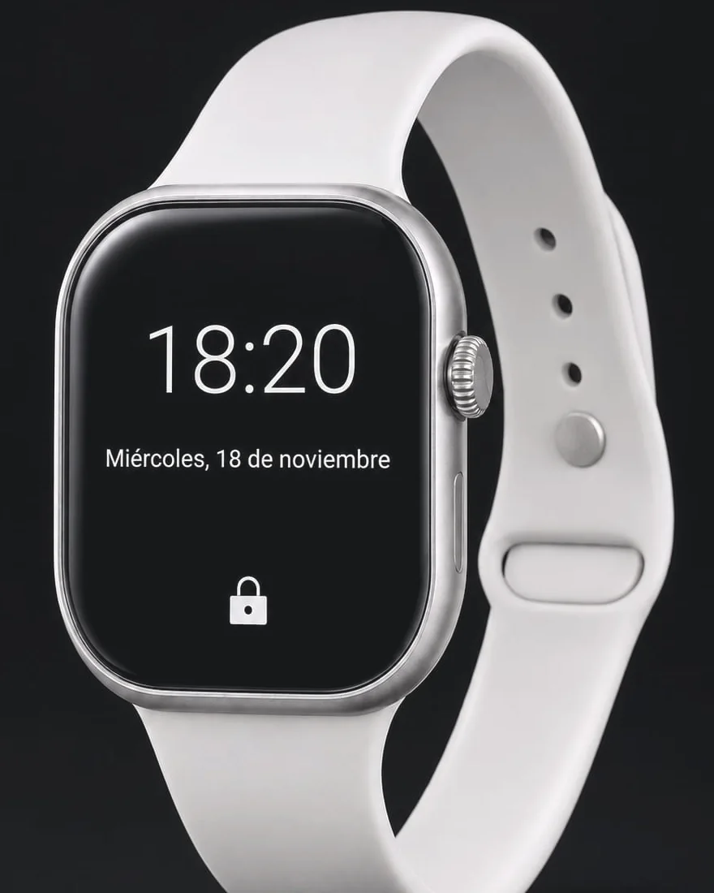
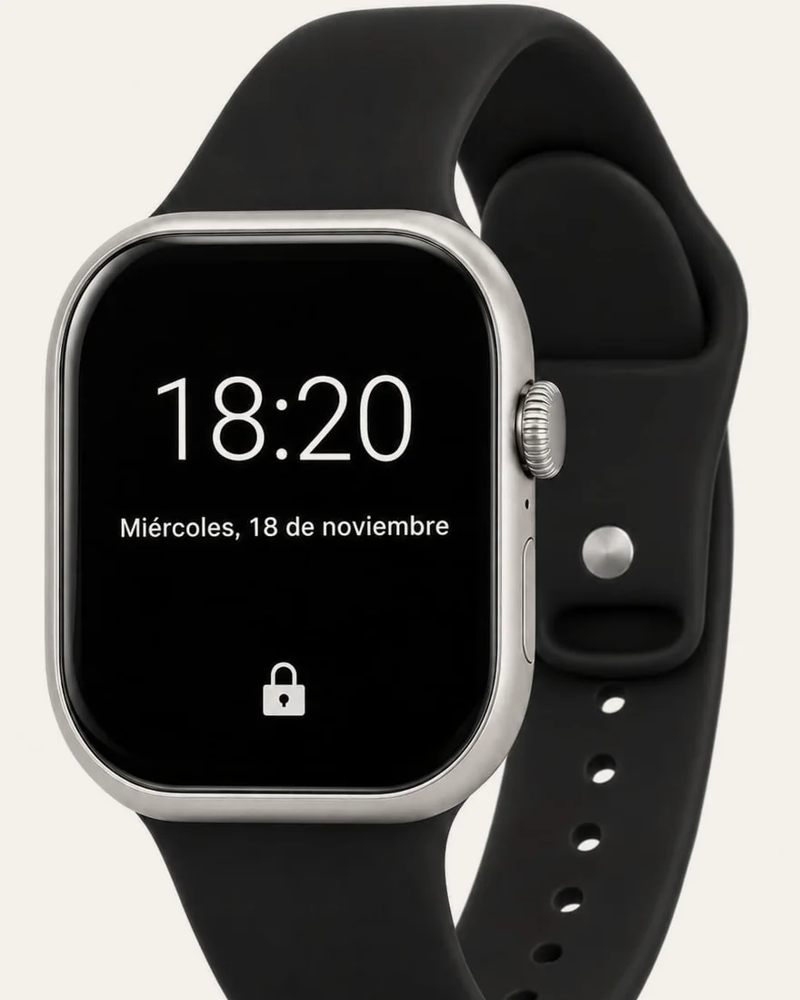
Correas
Correa blanca o negra
La misma caja plateada con dos correas. Cierra con hebilla de pasador y tiene siete agujeros para ajustarla.
Tu elección pasa al pedido: correa blanca. Ir al pedido
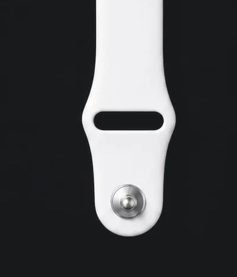
Hebilla de pasadorFicha técnica
Ficha técnica del VP29
Datos del fabricante, agrupados para comparar rápido.
- Modelo
- VP29 · lanzamiento 2026
- Reloj inteligente unisex
- Pantalla
- AMOLED de 2,29″, 490 × 580
- Táctil multitáctil, forma cuadrada
- Sistema
- Android 10.0, procesador W377E
- 4 GB de RAM
- Tienda de apps y actualización OTA
- Cámara
- Telescópica, gira 180°
- Videollamadas, fotos y grabación
- Batería
- 1380 mAh
- Hasta 2 días de duración
- Modo de ahorro de energía
- Conectividad
- Chip SIM: contestar y marcar llamadas, SMS
- Wi-Fi, NFC y Bluetooth 4.1 (auriculares)
- Sensores
- Frecuencia cardíaca, acelerómetro, giroscopio
- Podómetro, barómetro y brújula
- Salud y actividad
- Pulso y presión arterial*
- Pasos, ejercicio, sueño y estado de ánimo*
- Avisos y funciones
- Avisos de llamadas y mensajes
- Música, calendario, alarma, cuenta regresiva y calculadora
- Multimedia
- Audio MP3, AAC, WMA y AMR
- Fotos JPG y BMP, video y galería
- Diseño
- Resistencia IP67
- Hebilla de pasador, correa blanca o negra
- Certificación CE
* Mediciones referenciales según el fabricante; no reemplazan a un equipo médico.
Pedido
Pedido del VP29
Precio a consultar Modelo 2026
Elige el color y deja tus datos: te escribimos con el precio y el envío a tu ciudad.
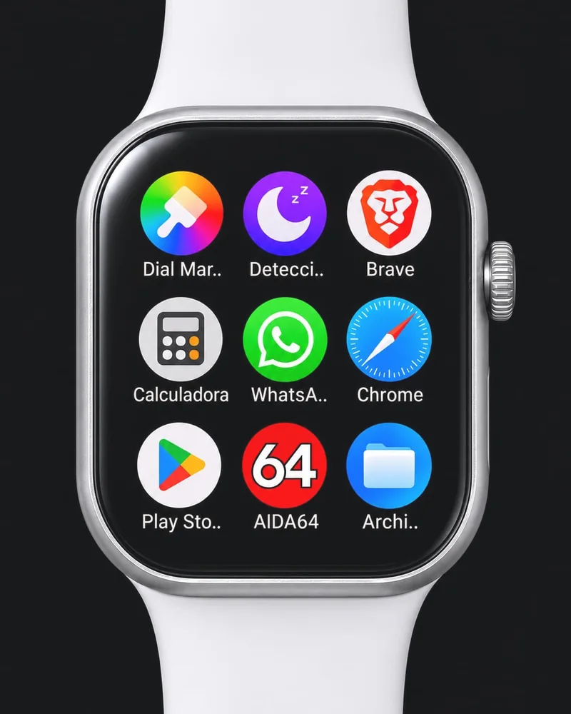
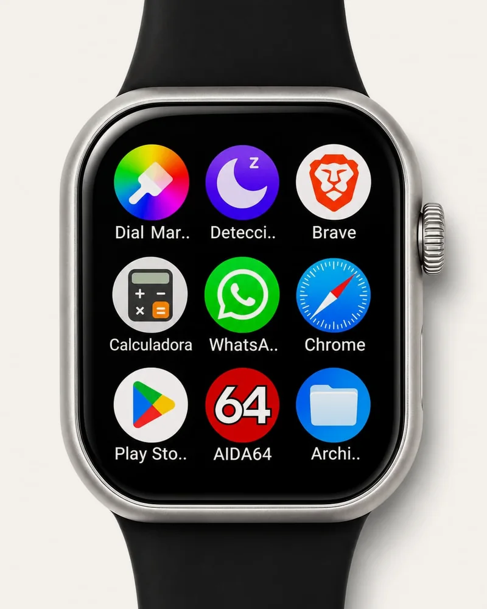